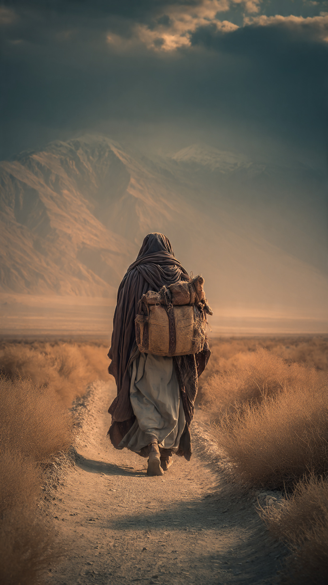

في بلاد فارس، وفي زمن بعيد قبل ظهور الإسلام، وُلد رجل سيصبح اسمه من أشهر أسماء الصحابة.
كان اسمه سلمان الفارسي.
نشأ سلمان في بيت له مكانة كبيرة، وكان والده من أصحاب المكانة بين قومه.
وكان سلمان يعيش حياة مريحة، لكنه كان يحمل في داخله سؤالًا مهمًا:
أين يوجد الطريق الصحيح إلى الله؟
كان منذ صغره يحب التفكير والبحث، ولم يكن يكتفي بما وجده عند قومه دون أن يتأكد.
وفي يوم من الأيام، مرَّ سلمان بمكان كان فيه قوم يصلون بطريقة مختلفة عن التي اعتاد عليها.
فأعجب بما رأى، وشعر أن في عبادتهم شيئًا يلامس قلبه.
بدأ يسأل عن دينهم، وعن سبب عبادتهم، وعن معتقداتهم.
وكان يريد أن يعرف الحقيقة مهما كان الطريق صعبًا.
لكن عندما علم والده باهتمامه بهذا الأمر، خاف عليه ومنعه من متابعة البحث.
فقد كان يريد له أن يبقى على ما عليه آباؤه.
لكن قلب سلمان كان قد بدأ رحلة طويلة...
رحلة لم تكن بحثًا عن المال أو المكانة، بل بحثًا عن الحق.
قرر سلمان أن يترك الراحة التي عاش فيها، وأن يسافر ليتعلم من أهل العلم والدين.
لم يكن يعلم أن هذه الرحلة ستأخذه إلى أماكن كثيرة، وأنه سيواجه اختبارات صعبة قبل أن يصل إلى ما يبحث عنه.
كانت بداية رحلة ستغير حياته إلى الأبد.
📷 الصورة رقم 1

بدأ سلمان الفارسي رحلته الطويلة بحثًا عن الحقيقة.
ترك خلفه حياة الراحة، واختار طريقًا مليئًا بالمشقة، لأنه كان يريد أن يصل إلى ما يطمئن إليه قلبه.
سافر بين البلاد، والتقى بعدد من أهل العلم، وكان يسألهم عن الدين الصحيح وعن طريق الأنبياء.
كان سلمان لا يبحث عن مجرد المعرفة...
بل كان يبحث عن الإيمان الذي يملأ القلب باليقين.
وفي رحلته، التقى بأشخاص من أهل العبادة، وتعلم منهم الكثير.
وكان كلما قابل رجلًا صالحًا سأله:
"إلى من أذهب بعدك؟ ومن يدلني على الطريق؟"
وكان ينتقل من شخص إلى آخر، حتى بقي يبحث عن آخر طريق يقوده إلى الحق.
لكن الرحلة لم تكن سهلة.
فقد واجه سلمان التعب والغربة وفقدان الراحة التي كان يعيش فيها.
ومع ذلك، لم يتراجع.
فقد كان يؤمن أن من يطلب الحق بصدق، فإن الله يرشده إليه.
وفي النهاية، وصل سلمان إلى أرض العرب.
وهناك سمع أخبارًا عن نبي سيظهر في آخر الزمان.
بدأت علامات كثيرة تجعله يشعر أن رحلته الطويلة اقتربت من نهايتها.
فقد كان يبحث عن شخص يحمل صفات الأنبياء الذين عرف أخبارهم.
ولم يكن يعلم أن لقاءه القادم سيغير حياته بالكامل.
📷 الصورة رقم 2
وصل سلمان الفارسي إلى المدينة المنورة، وهناك وجد ما كان يبحث عنه منذ سنوات طويلة.
فقد سمع عن النبي محمد ﷺ، وعرف من العلامات التي تعلمها من قبل أن هذا هو النبي الذي كان ينتظره.
ذهب سلمان ليرى النبي ﷺ، ولاحظ الصفات التي كان قد سمع عنها.
فعرف أن رحلته الطويلة لم تذهب هباءً، وأن الله هداه إلى الطريق الذي كان يبحث عنه.
آمن سلمان بالنبي ﷺ، وأصبح من الصحابة الكرام.
وبعد سنوات من البحث والسفر، وجد المكان الذي شعر فيه بالطمأنينة.
لم تكن رحلة سلمان مجرد سفر بين البلاد...
بل كانت رحلة قلب يبحث عن الحقيقة.
أصبح سلمان معروفًا بحكمته وعلمه، وكان له مكانة عظيمة بين المسلمين.
وقال النبي ﷺ عنه:
"سلمان منا أهل البيت"
وقد شارك سلمان المسلمين بأفكاره وخبراته، ومن أشهر مواقفه أنه أشار بحفر الخندق في غزوة الأحزاب، وهي فكرة كانت معروفة في بلاد فارس.
وهكذا أصبح سلمان مثالًا للإنسان الذي لا يخاف من البحث عن الحق، حتى لو اضطر لترك الراحة ومواجهة الصعوبات.
تعلمنا قصته أن الوصول إلى الحقيقة يحتاج إلى صدق وصبر، وأن الله يهدي من يطلب الخير بقلب مخلص.
🌙📖 انتهت القصة 📖🌙
العبرة:
من صدق في البحث عن الحق، هداه الله إليه، والصبر في طريق الخير يؤدي إلى أجمل النتائج.